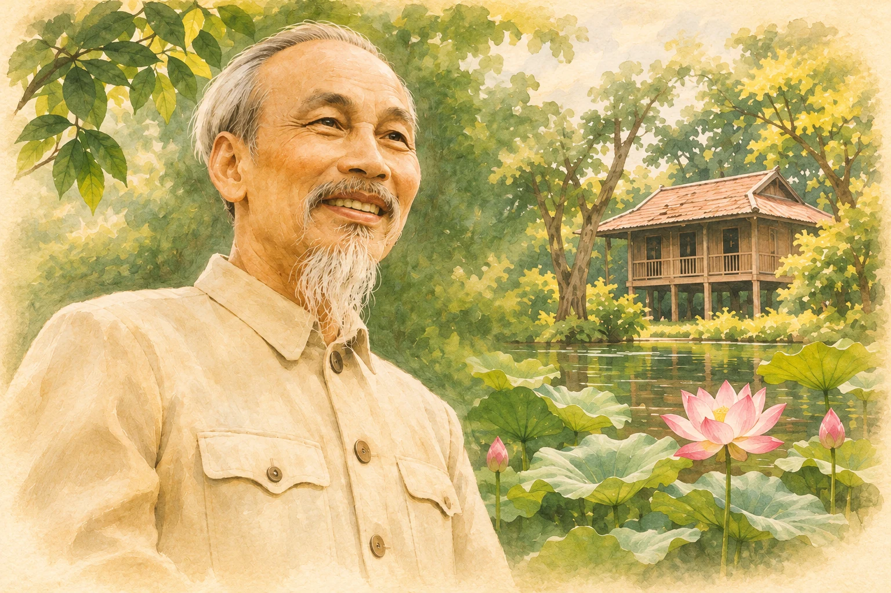

Một cuộc đời vì nước, vì dân
Sáng mãi
tên Người
Học tập và làm theo Bác
Bác đã sống, học tập và hoạt động ở những đâu? Mời các em tìm hiểu qua các mốc thời gian, ảnh và chuyện kể dưới đây.
1890 – 1969 · 7 chặng đường lịch sử
1890 – 1969Chủ tịch Hồ Chí Minh

Hành trình của Bác
Theo dấu chân Người
Chọn một giai đoạn
để bắt đầu tìm hiểu.
Đang mở hành trình…
Kho tư liệu
Tư liệu về Bác
Xem ảnh, đọc chuyện kể hoặc chọn một bộ phim.
Lọc tư liệu theo giai đoạn
Chưa có tư liệu phù hợp
Em thử chọn một loại tư liệu hoặc giai đoạn khác nhé.
Việc làm của học sinh
Học tập và làm theo Bác
Ở lớp, ở nhà, các em có thể bắt đầu bằng những việc dưới đây.
Hình minh họa các hoạt động học sinh.
Học sinh Trường Tiểu học Gia Lâm học tập và làm theo BácChăm học, giúp bạn và giữ gìn trường lớp từ những việc hằng ngày.
Nguồn tham khảo
Nguồn ảnh
Chưa mở được nội dung
Em hãy kiểm tra kết nối rồi thử tải lại trang.